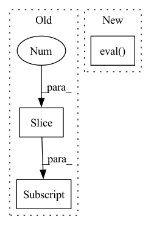

Pattern ID :29042
Before Change
// Load the VGG19 model trained on the ImageNet dataset.
vgg19 = models.vgg19(pretrained=True).eval()
// Extract the thirty-sixth layer output in the VGG19 model as the content loss.
self.feature_extractor = nn.Sequential(*list(vgg19.features.children())[:35] )
// Freeze model parameters.
for parameters in self.feature_extractor.parameters():
parameters.requires_grad = FalseAfter Change
// Extract the thirty-sixth layer output in the VGG19 model as the content loss.
self.feature_extractor = create_feature_extractor(model, [feature_extractor_node])
// set to validation mode
self.feature_extractor.eval()
// The preprocessing method of the input data. This is the VGG model preprocessing method of the ImageNet dataset.
self.normalize = transforms.Normalize(normalize_mean, normalize_std, True)
In pattern: SUPERPATTERN
Frequency: 5
Non-data size: 3
Instances Fragment ID: 85637642
Project Name: lornatang/esrgan-pytorch
Commit Name: a9031d71f6f27449fe63ec703344577e35fa87cb
Time: 2022-04-15
Author: liuchangyu1111@gmail.com
File Name: model.py
M Class Name: ContentLoss
N Class Name: ContentLoss
M Method Name: __init__(4)
N Method Name: __init__(1)
M Parent Class: nn.Module
N Parent Class: nn.Module
M File Name: model.py
N File Name: model.py
M Start Line: 211
M End Line: 223
N Start Line: 186
N End Line: 198
Before Change
)
// train and test loop
for experience in (scenario.train_stream)[:1] :
t = experience.task_label
exp_id = experience.current_experience
training_dataset = experience.datasetAfter Change
strategy.train(experience)
print("\nEVALUATION")
for experience in (scenario.train_stream):
strategy.eval( experience)
def get_custom_benchmark(use_task_labels=False, shuffle=False, n_samples_per_class=100, train_transform=None, eval_transform=None):
Fragment ID: 85637643
Project Name: continualai/avalanche
Commit Name: b66d294b873d063a89c1cc763d7caa6dd0d8a016
Time: 2022-07-06
Author: nishantaswani@nyu.edu
File Name: examples/expert_gate_example.py
M Class Name: AnonimousClass
N Class Name: AnonimousClass
M Method Name: test_expertgate(0)
N Method Name: test_expertgate(0)
M Parent Class:
N Parent Class:
M File Name: examples/expert_gate_example.py
N File Name: examples/expert_gate_example.py
M Start Line: 28
M End Line: 62
N Start Line: 27
N End Line: 66
Before Change
token_list = sample_text.masked_select(sample_text != 0).tolist()
decoded_text = self.tokenizer.decode(token_list)
x, _ = batch
x = x[:1]
x_rec = outputs["xrec"][:1]
"""
text = text.to(pl_module.device)
x = x.to(pl_module.device) After Change
text = text.to(pl_module.device)
x = x.to(pl_module.device)
with torch.no_grad():
pl_module.eval()
logits = pl_module(text, x)
img_logits = logits[:, -pl_module.image_seq_len:].long()
img_seq = torch.argmax(img_logits, dim = -1)
img_seq -= pl_module.num_text_tokens Fragment ID: 85637640
Project Name: tgisaturday/dalle-lightning
Commit Name: a81d86252b4da80515bc8e1e847475324370f035
Time: 2021-07-29
Author: jamesk1228@gmail.com
File Name: pl_dalle/callbacks.py
M Class Name: DalleSimpleImageSampler
N Class Name: DalleSimpleImageSampler
M Method Name: on_validation_batch_end(7)
N Method Name: on_validation_batch_end(7)
M Parent Class: Callback
N Parent Class: Callback
M File Name: pl_dalle/callbacks.py
N File Name: pl_dalle/callbacks.py
M Start Line: 446
M End Line: 447
N Start Line: 441
N End Line: 452
Before Change
labels=input_ids,
return_dict=self.parent.return_dict)
loss, result = outputs[:2]
self.parent.assertIsInstance(loss.item(), float)
self.parent.assertEqual(
result.shape, [self.batch_size, self.seq_length, self.vocab_size])
loss.backward()After Change
position_ids, *args):
base_model = UNIMOModel(**config)
model = UNIMOLMHeadModel(base_model)
model.eval()
logits = model(input_ids,
token_type_ids=token_type_ids,
attention_mask=input_mask, Fragment ID: 85637644
Project Name: paddlepaddle/paddlenlp
Commit Name: fd6ef4058e18a2e6848a1c3cc5ca272905150ea0
Time: 2022-11-04
Author: 40912707+Yam0214@users.noreply.github.com
File Name: tests/transformers/unimo/test_modeling.py
M Class Name: UNIMOModelTester
N Class Name: UNIMOModelTester
M Method Name: create_and_check_forward_and_backwards(6)
N Method Name: create_and_check_forward_and_backwards(6)
M Parent Class:
N Parent Class:
M File Name: tests/transformers/unimo/test_modeling.py
N File Name: tests/transformers/unimo/test_modeling.py
M Start Line: 402
M End Line: 413
N Start Line: 373
N End Line: 374
Before Change
decoded_text = self.tokenizer.decode(token_list)
x, _ = batch
x = x[:1]
x_rec = outputs["xrec"][:1]
"""
text = text.to(pl_module.device)
x = x.to(pl_module.device)
with torch.no_grad():After Change
text = text.to(pl_module.device)
x = x.to(pl_module.device)
with torch.no_grad():
pl_module.eval()
logits = pl_module(text, x)
img_logits = logits[:, -pl_module.image_seq_len:].long()
img_seq = torch.argmax(img_logits, dim = -1)
img_seq -= pl_module.num_text_tokens Fragment ID: 85637645
Project Name: tgisaturday/dalle-lightning
Commit Name: a81d86252b4da80515bc8e1e847475324370f035
Time: 2021-07-29
Author: jamesk1228@gmail.com
File Name: pl_dalle/callbacks.py
M Class Name: DalleSimpleImageSampler
N Class Name: DalleSimpleImageSampler
M Method Name: on_train_batch_end(7)
N Method Name: on_train_batch_end(7)
M Parent Class: Callback
N Parent Class: Callback
M File Name: pl_dalle/callbacks.py
N File Name: pl_dalle/callbacks.py
M Start Line: 386
M End Line: 387
N Start Line: 383
N End Line: 396